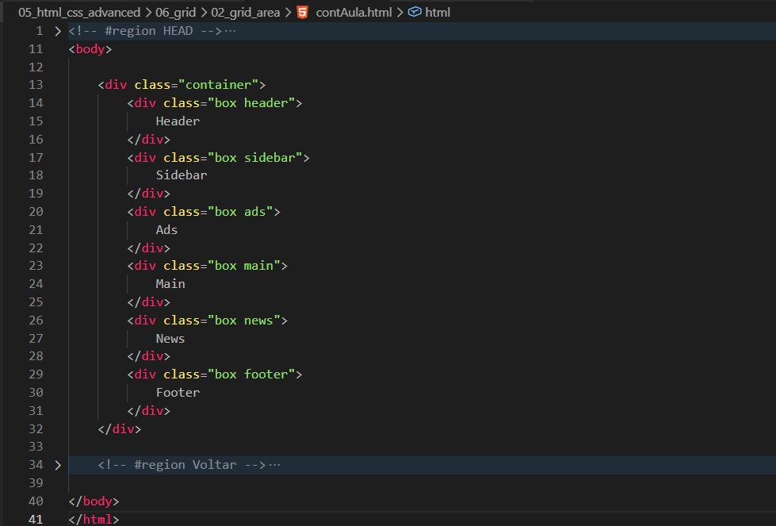
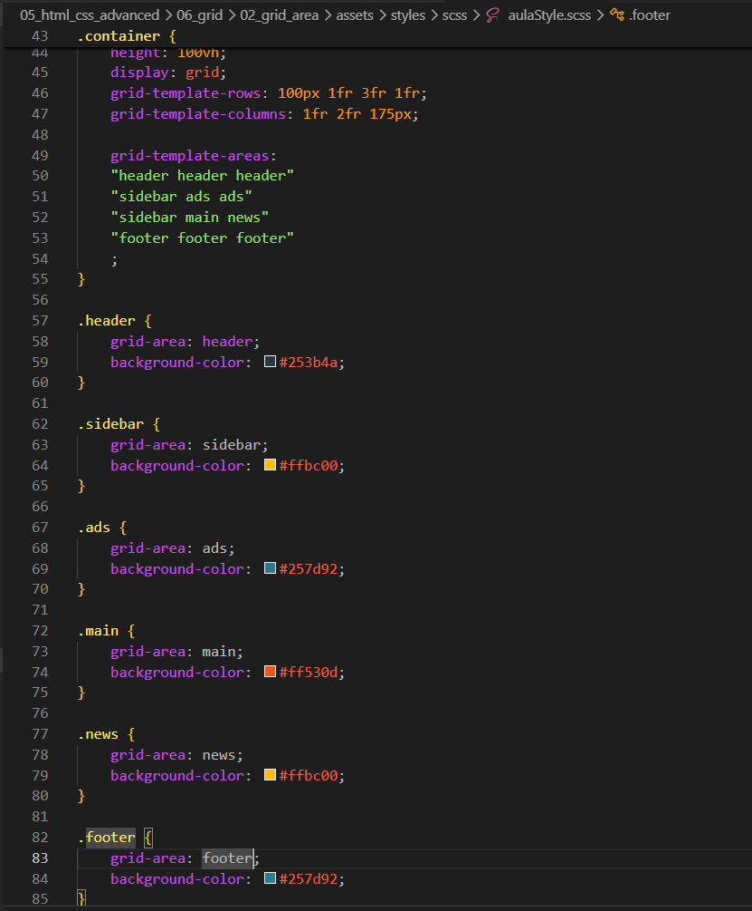
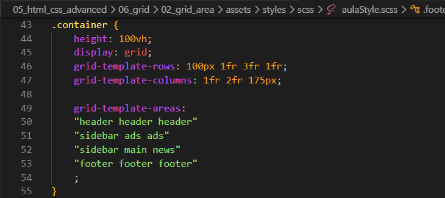
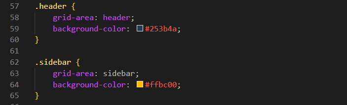

Grid Area
Introdução
Agora iremos entender melhor o Grid. Utilizaremos a mesma estrutura da aula anterior.
Código de exemplo:
HTML:

CSS:

Agora iremos entender melhor o Grid. Utilizaremos a mesma estrutura da aula anterior.
HTML:

CSS:

Iremos começar fazendo algumas alterações em nosso SCSS/CSS.
Primeiro iremos apagar todo o conteúdo relacionado a grid-row e grid-column, para entendermos melhor o funcionamento do grid-template-areas e do grid-area.
Com ele conseguimos desenhar visualmente as áreas do layout diretamente no CSS.
Ele normalmente é utilizado junto do grid-area, que será responsável por dizer qual elemento ocupará cada área criada.
Modo de uso:

Mais detalhes:
Como funciona a ordem?
Por exemplo, se a primeira linha possui 3 nomes, então ela possui 3 colunas. Se a segunda linha também possuir 3 nomes, tudo continuará correto.
Todas as linhas precisam ter a mesma quantidade de colunas? Sim.
Se a primeira linha possui 3 espaços e a segunda possui apenas 2, o CSS considera isso inválido e o layout não funcionará corretamente.
Você pode pensar nisso como uma planilha do Excel: todas as linhas precisam possuir a mesma quantidade de células.
Posso deixar espaços vazios? Sim.
Para isso utiliza-se um ponto (.). Isso significa literalmente: "não existe nenhum elemento aqui".
Isso é útil quando você deseja criar espaços vazios no layout.
O grid-area é utilizado para informar qual elemento ocupará cada área criada pelo grid-template-areas.
Após criar o mapa do layout, basta associar cada elemento ao nome da área correspondente.
Exemplo de uso:
